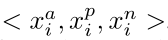
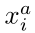
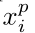
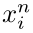
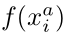
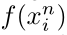

Fandong Zhang
PhD Student
Phone: +8613621040898
Email: zhangfandong@pku.edu.cn
.
Key Laboratory of Machine Perception (Ministry of Education)
Department of Machine Intelligence, School of Electronics Engineering and Computer Science (EECS)
Peking University, Beijing 100871, China
Nowadays, fingerprint authentication in mobile devices becomes increasingly popular. Limited by space, the fingerprint sensors are miniaturized, which leads to partial fingerprints (Fig. 1). Mobile fingerprint sensors are mainly capacitive, capturing images of resolution around 500dpi (Fig. 1). Partial fingerprint matching is challenging under such resolution because local features are relatively insufficient. Accuracy of minutiae-based fingerprint matching algorithms (Fu et al. 2012) degrades significantly with inadequate number of minutiae. Some other texture descriptors like SIFT (Lowe 2004), AKAZE (Alcantarilla and Solutions 2011) can increase the number of local matching (Yamazaki et al. 2015; Mathur et al. 2016), but they are not designed to make full use of fingerprint structures.
Optical fingerprint sensor (Fig. 2(a)) can capture fingerprints with resolution as high as 2000dpi (Fig. 1), providing very rich details such as pores, scars and so on (Fig. 2(b)). These features can make up for the insufficiency of minutiae. Moreover, with these details, fingerprint authentication system is much harder to crack.
Existing fingerprint authentication algorithms are mainly based on minutiae matching (Fu et al. 2012). Their accuracy degrades significantly for partial-to-partial matching when minutiae are relatively inadequate. Subtle features in high-resolution fingerprint images can be helpful to authentication. However, making use of these features is challenging, since they are unstable and irregular. There are very few researches about high-resolution fingerprint matching. (Jain, Chen and Demirkus 2007) proposes methods to detect and match pores. But there are so many kinds of subtle features that it is tedious to design methods to detect and match them one by one.
Features learned by deep convolutional neural network (CNN) have been proved more effective and robust than handcrafted features for kinds of image recognition tasks, such as person re-identification, face recognition, and so on. Inspired by these researches, in this paper, we propose a novel model named Deep Joint KNN-Triplet Embedding (Fig. 3) to learn features directly from scratch in an end-to-end manner via a well-designed deep CNN.
We have two major contributions. First, we employ a deep CNN with triplet loss to embed fingerprint images into an Euclidean space. Moreover, we carefully design a K-Nearest-Neighbor policy to select proper triplets for training. Second, by exploiting the advantages of triplet loss and softmax loss, we joint both losses to make our model converge fast and stably.
Experiments on our in-house database show that the proposed model achieves true accept rate of 89.17% where false accept rate is under 0.1%, and equal error rate of 1.94%, which outperforms several state-of-the-art approaches.
We design a 38-layer residual neural network (He et al. 2016) (Fig. 4). Let f(x) denote the feature embedding. It embeds a fingerprint image x into a d-dimension Euclidean space. In addition, we constrain ||f(x)||=1 suggested by (Schroff, Kalenichenko, and Philbin 2015). The following sections describe how we employ KNN-Triplet Embedding and Joint Feature Learning.
We first briefly review the standard triplet loss. For an input triplet of images , where (anchor) and (positive) come from the same identity while (negative) comes from another identity. Thus we want,
where alpha is a given constant representing the margin enforced between positive and negative pairs. The loss function of N triplets is defined as,
Triplet selection policy is quite crucial. Random sampling may result in slow convergence, since most triplets easily satisfy Eq.(1). Online hard example mining can accelerate convergence (Schroff, Kalenichenko, and Philbin 2015). However, a pair of partial fingerprints from the same identity may be captured from different regions of a finger. Triplets containing these couples should be ignored.
We employ KNN policy to address such a problem. To create one mini-batch, we firstly sample Nc identities and Np fingerprints per identity as anchors. Then we randomly sample Nn negative fingerprints to select hard negatives. For a given anchor, we only select k nearest positives to generate anchor-positive (a-p) pairs. For each a-p pair, we select the nearest negative sample to the anchor to form a triplet. Therefore we have Nc * Np * k triplets in one mini-batch. Fig. 5 shows the results of our KNN-policy. The selected positives are from similar region with the anchors.
Triplet loss can constrain features in Euclidean space. However, it has a relatively slow convergence speed. Here are two possible reasons. First, triplet loss measures relative distances. The optimization objective is relative and uncertain. Gradients of different batches may conflict to each other. Second, inter-class gradient (Eq. (3)) of triplet loss is small when  and  are close, which makes harder negative samples separate from other more slowly. Besides, bad parameter initialization or undesirable triplets may lead to a collapsed model f(x)=C, where C is a constant vector.
Softmax loss doesn't have the above problems, but it can't promise the features extracted from the same identity to be close in Euclidean space, since dissimilar vectors could have same outputs of softmax.
Therefore, we joint triplet loss and softmax loss (Eq. (4)) to take both advantages, providing not only a constraint in Euclidean space, but a fast and stable convergence.
Due to lack of publicly available partial high-resolution fingerprint database, we collected an in-house database. We used an optical fingerprint sensor with area 0.24"x0.39". Size of captured images is 480x800. We collected the database of 1800 identities in two steps. In first step, 20 scans on different finger regions were registered as templates for each person. In the second step, same volunteers gave 40 scans with varying finger regions and orientations as test images during matching. Then we randomly sampled 180 identities for testing. For the remaining 1620 identities, we discarded the illegal ones and left 1536 for training.
We compared accuracy of the proposed model against minutiae-based algorithm (Fu et al. 2012) (denoted as M) and AKAZE-based algorithm (Mathur et al. 2016) (denoted as A). We also compared accuracy of 3 variants of the proposed model by removing KNN (denoted as OurST), KNN-Triplet (denoted as OurS) and Softmax (denoted as OurKT). Table 1 shows the TAR (True Accept Rate) with FAR (False Accept Rate) under 0.1% and EER (Equal Error Rate) for above algorithms.
| Models | M | A | OurST | OurS | OurKT | Proposed |
|---|---|---|---|---|---|---|
| TAR@FAR<=0.1% | 28.83% | 11.11% | 80.78% | 76.17% | 71.33% | 89.17% |
| EER | 20.48% | 41.16% | 2.83% | 3.81% | 6.78% | 1.94% |
Our four models (OurST, OurS, OurKT, Proposed) are trained with the deep learning framework "Caffe" (Jia et al. 2014). Training images are resized to 240x400 and randomly cropped into 224x224 patches during training as data augmentation. We use a momentum of 0.9 and weight decay 0.0001. Batch-size is set to 180. We use Nc=5, Np=25, Nn=55. Weigths of triplet loss and softmax loss are both 1.0. The margin alpha is set to 0.3. We train all networks for 300K iterations with a base learning rate of 0.1 and then multiplies it with 0.1 after 150K, 230K, 270K, 290K iterations.
For other methods, images are resized to 500dpi as required. We use source code of (Fu et al. 2012). We detect A-KAZE features used in (Mathur et al. 2016) with OpenCV 3.1.0.
As shown in Table 1, all deep models outperform both algorithms based on minutiae and A-KAZE feature, showing great power of deep convolutional network. The average number of minutiae is around 18, which is not enough for minutiae-based algorithms. A-KAZE feature is obviously not suitable for our application. Removing any of the joint components in loss, or KNN sampling policy will make the accuracy degrade, proving the effectiveness of proposed method.
Fig 7. indicates that matching scores of different identities or different regions are relatively less than same identities with same regions.
Fig 8. indicates that 'conv1' filters response to different directions of ridges and dot-like-features such as pores.
Fig 9. shows that features extracted by our model are very well clustered by different identities.
In this paper, we propose a novel model to solve partial high-resolution fingerprint matching problem. Experimental results show that proposed model performs better than several existing methods. In future, we decide to investigate:
Alcantarilla, P. F., and Solutions, T. 2011. Fast explicit diffusion for accelerated features in nonlinear scale spaces. TPAMI 34(7):1281-1298.
Fu, X.; Liu, C.; Bian, J.; and Feng, J. 2012. Spectral correspondence method for fingerprint minutia matching. In ICPR, 1743-1746. IEEE.
He, K.; Zhang, X.; Ren, S.; and Sun, J. 2016. Deep Residual Learning for Image Recognition. In CVPR.
Jain, A.; Chen, Y; and Demirkus, M. 2007. Pores and Ridges: High-Resolution Fingerprint Matching Using Level 3 Features. TPAMI 29(1):15-27.
Jia, Y.; Shelhamer, E.; Donahue, J.; Karayev, S.; Long, J.; Girshick, R.; Guadarrama, S.; and Darrell, T. 2014. Caffe: Convolutional architecture for fast feature embedding. arXiv preprint arXiv:1408.5093.
Lowe, D. G. 2004. Distinctive image features from scale invariant keypoints. IJCV 60(2):91-110.
Mathur, S.; Vjay, A.; Shah, J.; Das, S.; and Malla, A. 2016. Methodology for partial fingerprint enrollment and authentication on mobile devices. In ICB, 1-8.
Schroff, F.; Kalenichenko, D.; and Philbin, J. 2015. Facenet: A unified embedding for face recognition and clustering. In CVPR, 815-823.
Yamazaki, M.; Li, D.; Isshiki, T.; and Kunieda, H. 2015. Sift-based algorithm for fingerprint authentication on smartphone. In IC-ICTES, 1-5. IEEE.